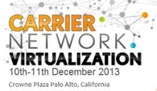

|
|
CLOUDBAND ECOSYSTEM
NOVEMBER MONTHLY UPDATE
|
|
|
Dear Virtual Network Friends,
Last week during our annual analyst conference, our CEO, presented his
vision for our company, what he refers to as “ ALU Network 2020 “ along
with his thoughts on how we have embraced change as a company. He says, "We are shifting away from being a networking company with a NFV offering. To emerging as a CLOUD and NFV Company."� Michel Combes explained his insight for Network 2020 as being highly distributed, highly scalable, highly flexible.
Those attributes fit particularly well with CloudBand. Our NFV
orchestration platform uses placement algorithms for ideal distribution
of VNFs, it provides massive scaling thanks to carrier grade strength
and reliability, and it is highly flexible because of its openness to
integrate with any other platform, not just our own.
This openness allows us to work closely with our business units but also
with a large number of VNF vendors that participate in our Ecosystem
program. We are currently prototyping over 30 different use cases.
Take 30min to view to our November mashup, it will give you a good overview of the work we are doing, and come to meet the team at "Carrier Network Virtualization" in Palo Alto this December.
Valerie
Follow us on Twitter:
@valerienoto
@dawnpatroldeb
|
|
|
|
|
|
|
NEW PARTNERS TO THE ECOSYSTEM THIS MONTH
|
|
|
|
GENBAND is a global leader in software-based, real time
communications solutions for service providers, enterprises,
independent software vendors and systems integrators in over 80
countries. GENBAND helps its customers connect people to each other and
address the growing demands of today’s consumers and businesses for
productive real time communications. Enabling Real Time Communications
Without Boundaries, GENBAND’s Network Modernization, Unified
Communications, Mobility and Embedded Communications solutions enable
its customers to create positive business outcomes.
www.genband.com
|
|
|
|
Kontron converged infrastructure platforms are designed to bring
any network application to life deployed by telecom, cable, and cloud
service providers. We are experienced system architects who match our
clients’ network application requirements with the right hardware,
software and service solutions integrated for 4G LTE Evolved Packet
Core, Content Delivery Networks, and Cloud infrastructure deployments.
Kontron is committed to expanding its integration efforts with partners
to ensure service providers can deploy with confidence any high density,
high availability platforms that are pre-validated for NFV
infrastructure. Kontron is listed on the German TecDAX stock exchange
(KBC).
www.kontron.com/communications
|
|
|
|
Tech Mahindra represents the connected world, offering innovative
and customer-centric information technology services and solutions that
enable Enterprises, Associates and the Society to Rise™. We are a USD
3.4 billion company with 95,300+ professionals across 51 countries,
providing services to 649 global customers including Fortune 500
companies. Our Consulting, Enterprise and Telecom solutions, platforms
and reusable assets connect across a number of technologies to deliver
tangible business value to all our stakeholders.
http://www.techmahindra.com/
|
|
|
|
|
|
ALCATEL-LUCENT TECHNOLOGY SYMPOSIUM 2014
|
|
|
Last week Alcatel-Lucent hosted its 2014 Technology Symposium . This
event discusses the companies shift plan and brightly shines a spotlight
on the industrial-scale transformation spreading across telecom and
enterprise networks. CEO Michel Combes, the company’s other top brass,
global customers and partners come together to discuss the key trends
and newest technologies that are driving forces behind this
unprecedented shift towards IP and ultra-broadband.
Learn more.
|
|
|
|
|
Alcatel-Lucent's CloudBand NFV platform
Valerie Noto, Director, CloudBand Ecosystem, Alcatel-Lucent
Carriers are fundamentally re-thinking the network with the objective to
remove the walls between network services and network infrastructure,
to reduce OPEX significantly, and to achieve unprecedented network
elasticity and calability for answering unexpected demands.
Alcatel-Lucent has designed CloudBand NFV platform to meet the needs of
service providers, listen to Valerie Noto speak to Telecom TV, about the
CloudBand Ecosystem and how openness is the key to moving our industry
forward.
Guy Shemesh, Senior Director, Cloudband Business Unit, Alcatel-Lucent
In the past 12 months, the conversation has moved from the "why" to the
"how" and "when". Most of the large operators want to move forward with
NFV technologies, and are now looking at the details of how to start and
which applications to focus on. Cloud has helped to evolve NFV
technology and its engagement with telcos. Now that they are dealing
with multiple vendors, how do telcos transform their businesses and move
away from their traditional silo approach. And how is this integrated
with their OSS systems and security?
Filmed at: SDN & OpenFlow World Congress 2014, Dusseldorf, Germany; 14 October, 2014
|
|
|
|
|

Please visit us at the Carrier Network Virtualization
in Palo Alto. Ron Haberman VP & General Manager of CloudBand, will
be discussing MANO. Also, don’t miss Guy Machlev, Director of Cloud
Solutions, he will participate on a panel discussing “The timeline for
NFV and SDN Transformation”.
Demystifying the MANO
As operators continue their aggressive plans for NFV, the attention is
now on the management and orchestration layer, called MANO in ETSI NFV.
The role of MANO is causing some confusion in the industry as it’s not
clearly defined and yet it plays a critical role in making NFV a
reality. In this presentation we will demystify the role of MANO by
addressing some key questions: what is the scope of MANO, what is its
relationship with the VNFs and OSS layers and what are the gaps the
industry needs to align on?
|
|
|
|
|
|
|
|
|